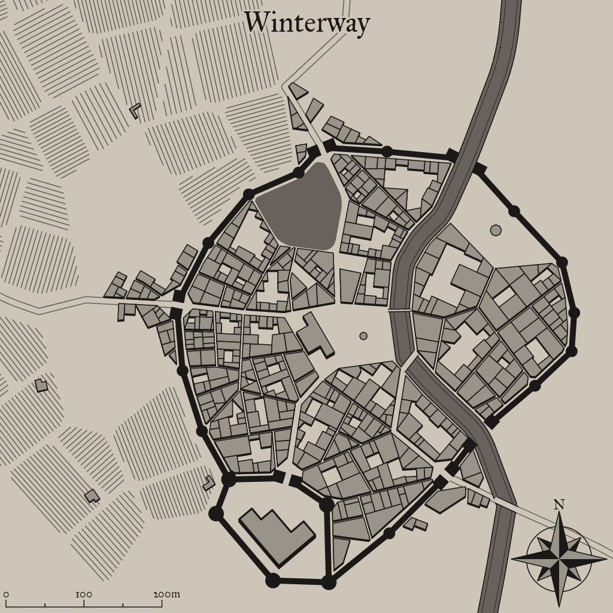

Winterway
A mystical settlement in a fantastical world

Background Flavor
Situated on top of a hill, this village provides a great viewpoint of surrounding fields. It has a massive wooden structure in the center of town that can be lit on fire in case there is danger spotted, warning residents from the area that they should prepare.
1
Settlement Features
Winterway is a small city 5,001-10,000 located in the flat lands region of the areas greater grassland. The settlement seems to be matured. Winterway and the local surroundings are under the control of the military.
Demographics
- Name: Winterway
- Real population: 10978
- Population: Small City 5,001-10,000
- Number by race: Human 40%, Dwarf 10%, Elf 10%, Gnome 10%, Halfling 10%, Half-elf 15%, Half-orc 5%,
- Wealth: 4
- Age: 4
- Alignment: 2
- Government Type: The Military - The settlement is an armed garrison that exists solely to serve the military forces deployed there.
- Settlement Trait: Deep Traditions
- Number Of Wards: 21
- Number of Districts: 4
Industry and Economy
- Primary Raw Materials: Mining
- Shops of Note: Grain Mill, Leatherwork: General, Artist: Scribes, Lawyer, Brewery, Tailor, Adventure Supplies, Baker.
- Number Of Inns/Taverns: 2
- Inns/Taverns of Note: Gross Harpy Pub, The Screeching Golem, The Loud Sailor Inn, The Straight Cartographer Tavern, The Bather and The Wheelwright Tavern.
Districts
Cloowergost Cross
Craft: Blacksmith, tanner’s row, maker’s street, guild canton, loomworks.
Remmest Side
Hazardous: Old well, abandoned mine, crumbling ruins of the old town, sinkhole, blood forest, scree slope, buried canton, magma pit.
South Spleld
Green: Common, green, herbalist, fishery, garden, lumberyard, granary, farm, parkland.
South Naippais
Midtown Cledard: Historic: Old inn, founder’s house, ancient city, ruins district.
Taverns / Inns
Gross Harpy Pub
Location
South Naippais
Description
It's difficult to see through the small, stained glass windows, but the enjoyment from within can be felt outside.
Innkeeper
Bob
Menu
- Chicken Liver Pate and Bread (3 sp)
- Roasted and Smoked Pork Spareribs (6 sp)
- Boiled Eggs and Buckwheat Bread, Tankard of Mead (11 cp)
- Stewed Mutton and Whey Cheese, Tankard of Perry (8 cp)
- Kito's Spiced Potatos (7 cp)
The Screeching Golem
Location
Cloowergost Cross
Description
It's impossible to see through the closed windows, but the quiet sorrow from within can be felt outside.
Innkeeper
Bob
Menu
- Pork liver, Seaweed, Succotash, Rice, Fruitcake (2 sp).
- Goose eggs, Currants, Corn pone (1 sp).
- Roast Stuffed Leg of Lamb with Mint Sauce (6 sp)
- Roast Goose strewn with Caraway seeds (4 sp)
- Stewed Eel and Turnip, Tankard of Cider (8 cp)
The Loud Sailor Inn
Location
Cloowergost Cross
Description
As you enter the tavern through the hardwooden door, you're welcomed by a feeling of discomfort and aromas of what's probably food, hopefully.
Innkeeper
Bob
Menu
- Roast Goose strewn with Caraway seeds (4 sp)
- Boiled Eggs and Buckwheat Bread, Tankard of Mead (11 cp)
- Blood pudding, Curds, Chicken eggs, Strawberries, Oatmeal (1 sp).
- Stewed Lentils, Mug of Perry (4 cp)
- Breaded Breast of Chicken, Whiskey and Mushroom Sauce (6 sp)
2
The Straight Cartographer Tavern
Location
South Naippais
Description
The tavern itself is packed. Tourists seem to be the primary clientele here, which often leads to exciting evenings. Several long tables are occupied by, what looks like couples, lone travellers and anybody else who enjoys great company. The other, smaller tables are also occupied by people who are singing and dancing, occassionaly pulling an unsuspecting waitress amidst their dancing group. Even most of the stools at the bar are occupied, though nobody seems to mind more company.
Innkeeper
Bob
Menu
- Stewed Onions, Mug of Cider (5 cp)
- Stewed Lentils, Mug of Cider (3 cp)
- Roast Goose strewn with Caraway seeds (4 sp)
- Stewed Mutton and Whey Cheese, Tankard of Perry (8 cp)
- Roasted Cabbage, Mug of Stout (4 cp)
The Bather and The Wheelwright Tavern
Location
South Spleld
Description
The tavern itself is almost completely abandoned. The few people inside could be locals, could be lost souls, but whoever they are, you'd like to stay as for away from them as possible.
Innkeeper
Bob
Menu
- Cheese rolls with a filling of nuts, honey and vegetables (6 cp)
- Mutton, Lettuce and Tomato (5 sp)
- Chicken Liver Pate and Bread (3 sp)
- Boiled Eggs and Dried Leek, Tankard of Stout (10 cp)
- Roasted Cabbage, Mug of Stout (4 cp)
3